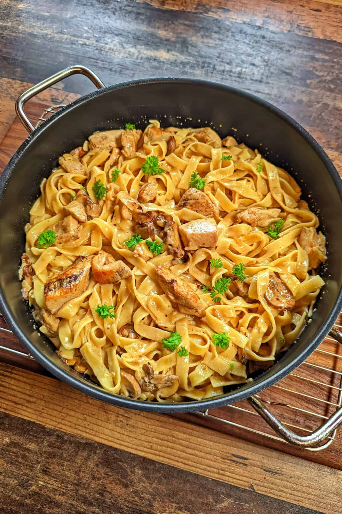

London-Nudeln

Das ist mein zweites Rezept auf meiner Webseite!
Ich habe dieses Rezept entdeckt, als Ich mit meiner Verlobten einen gemeinsamen Urlaub in London unternommen habe. Einbeschlossen Ihrer lieben Familie!
Dieses Rezept ist nichts für Feinde von Kalorien. Was ich damit meine werdet ihr in der Zutaten-Liste merken.
Zutaten-Liste
- 250 gramm Farfalle
- 100g Frischkäse
- 200ml Sahne
- 400g Hänchenfleisch (roh)
- 50g geriebener Käse
- Gewürze nach Wahl
- Blattspinat
- Gemüse nach Wahl
Zubereitung
- Zuerst setzen wir Wasser zum Kochen auf und geben dann das gekochte Wasser in den Topf
- Gleich danach geben wir das Hänchenfleisch zum Kochen in die Pfanne!
- In der Pfanne würzen wir das Hänchenfleisch. Kann auch davor Gewürzt werden
- Ist das Hänchenfleisch gekocht, schütten wir anschließend die Sahne in die Pfanne und würzen die Sahne anschließend nach mit Salz, Pfeffer, Curry, Oregano, Knoblauchgewürz und Chili-Flocken mild.
- Wenn die Sahne schon warm ist in der Pfanne geben wir dann den Frischkäse hinzu und anschließend bisschen geribenen Käse
- Danach lassen wir alles zusammen circa 2-5 min leicht köcheln und wenn die Nudeln dann auch schon fertig sind, können wir alles auf einen Teller servieren!
Index